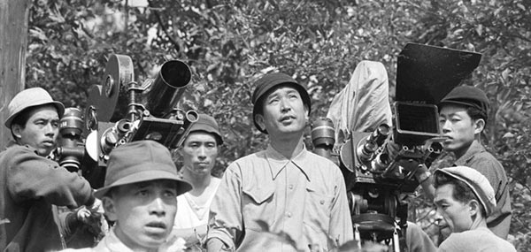

Un chef d'œuvre

Les Sept Samouraïs demeure sans doute le plus célèbre film d’Akira Kurosawa et de tout le cinéma japonais. C’est également un chef-d’œuvre épique dont la grande bataille sous la pluie constitue un modèle insurpassable, aux côtés de celle d‘Alexandre Nevski d’Eisenstein. On aurait tort de réduire le film, en raison d’une version tronquée qui fut longtemps l’unique montage visible hors du Japon, à la seule dimension de western féodal glorifiant les samouraïs, le cinéaste étant lui-même un descendant de cette caste. Le film dans sa durée intégrale de 200 minutes restaure la valeur humaniste réelle de l’art de Kurosawa. Les Sept Samouraïs est un sommet du film d’action et d’aventure, mais cette aventure est avant tout morale. Le cœur du film n’est pas le code d’honneur des samouraïs, mais le choix de la cause des paysans. Ces derniers sont désignés à la fin du film comme les véritables vainqueurs de la bataille, tandis que les samouraïs survivants, habitués aux défaites et à l’oubli ne peuvent que constater le caractère dérisoire de cette victoire qui ne fait paradoxalement qu’entériner leur déclin. Comme à son habitude, Kurosawa dresse un tableau de la condition humaine, aussi maître de son art dans les scènes d’action que dans les moments comiques ou intimistes. À cet égard le personnage de Kikuchiyo est le plus emblématique du film, car il est à la fois paysan et samouraï, lâche et courageux, ridicule et grandiose, drôle et tragique. Toshiro Mifune, et dans un registre plus sobre Takashi Shimura, acteurs fétiches de Kurosawa, livrent des peformances inoubliables. À deux reprises Kurosawa utilise un discret ralenti de l’image lors de scènes de morts violentes. Ce sont les premiers exemples marquants de cette figure de style pour filmer l’action, et des admirateurs de Kurosawa nommés Sergio Leone et Sam Peckinpah s’en souviendront dans leurs films. Il suffit de voir et revoir l’immense Sept Samouraïs pour déplorer l’appauvrissement du matériau original auquel se livra John Sturges dans son remake américain Les Sept Mercenaires, ancêtre des « blockbusters » actuels.